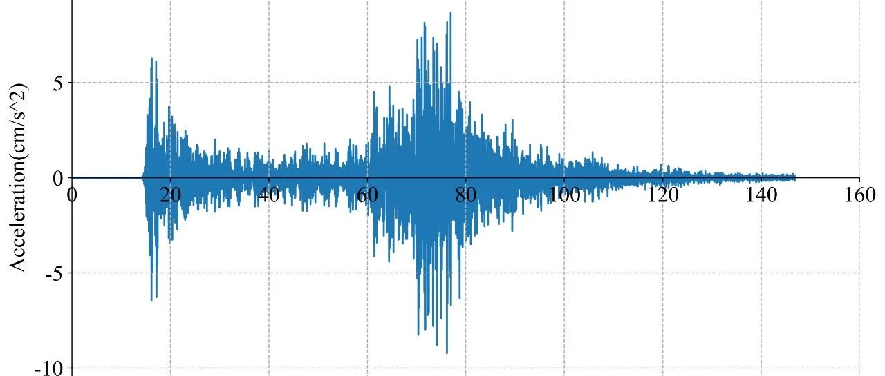

RED-ACT: 7月28日日本本州南岸近海6.4级地震破坏力分析
RED-ACT Report
Real-time Earthquake Damage Assessment using City-scale Time-history analysis
July 28, M6.4 Japan Mie-ken Earthquake
Research group of Xinzheng Lu at Tsinghua University ([email protected])
First reported at 7:00, July 28, 2019 (Beijing Time, UTC +8)
Acknowledgments and Disclaimer
The authors are grateful for the data provided by K-NET and KiK-net. This analysis is for research only. The actual damage resulting from the earthquake should be determined according to the site investigation.
Scientific background of this report can be found at:
http://www.luxinzheng.net/rr.htm
1. Introduction to the earthquake event
At 03:31 28 Jul 2019 (Local Time, UTC +9), an M 6.4 (JMA) earthquake occurred in Japan Mie-ken. The epicenter was located at 137.4 33.0, with a depth of 420.0 km.
2. Recorded ground motions
10 ground motions near to epicenter of this earthquake were analyzed. The names and locations of the stations can be found Table 1. The maximal recorded peak ground acceleration (PGA) is 44 cm/s/s. The corresponding response spectra in comparison with the design spectra specified in the Chinese Code for Seismic Design of Buildings are shown in Figure 1.


Figure 1 Response spectra of the recorded ground motions with maximal PGA
3. Damage analysis of the target region subjected to the recorded ground motions
Using the real-time ground motions obtained from the strong motion networks and the city-scale nonlinear time-history analysis, the damage ratios of buildings located in different places can be obtained. The building damage distribution and the human feeling distribution near to different stations are shown in Figure 2 and Figure 3, respectively. These outcomes can provide a reference for post-earthquake rescue work.

Figure 2 Damage ratio distribution of the buildings near to different stations

Figure 3 Human feeling distribution near to different stations
4. Earthquake-induced landslide of the target region subjected to the recorded ground motions
According to local topographic data, lithology data and ground motion records, the distribution of earthquake-induced landslide near to different stations under the different proportions of the landslide slab thickness that is saturated can be calculated, as shown in Figure 4. The basemap shows the distribution of the local slope. The number in the circle represents the critical slope of the landslide. The earthquake-induced landslide tends to occur with a higher probability when the slope near the station is larger than this threshold value.

(a) The proportion of the landslide slab thickness that is saturated equals 0%

(b) The proportion of the landslide slab thickness that is saturated equals 50%

(c) The proportion of the landslide slab thickness that is saturated equals 90%
Figure 4 Distribution of earthquake-induced landslide near to different stations
Scientific background of this report can be found at: http://www.luxinzheng.net/rr.htm
Table 1 Names and locations of the strong motion stations
No. Station Name Longitude Latitude
1 CHB014 140.049 35.4769
2 FKS006 140.759 37.5031
3 GNM009 139.325 36.4106
4 IBR002 140.707 36.7061
5 IBR003 140.645 36.5915
6 IBR004 140.41 36.5516
7 IBR005 140.237 36.3851
8 IBR013 140.489 36.1587
9 TCG011 139.614 36.3867
10 TCG014 140.174 36.545

---End---
相关研究
长按识别二维码，关注我们的科研动态